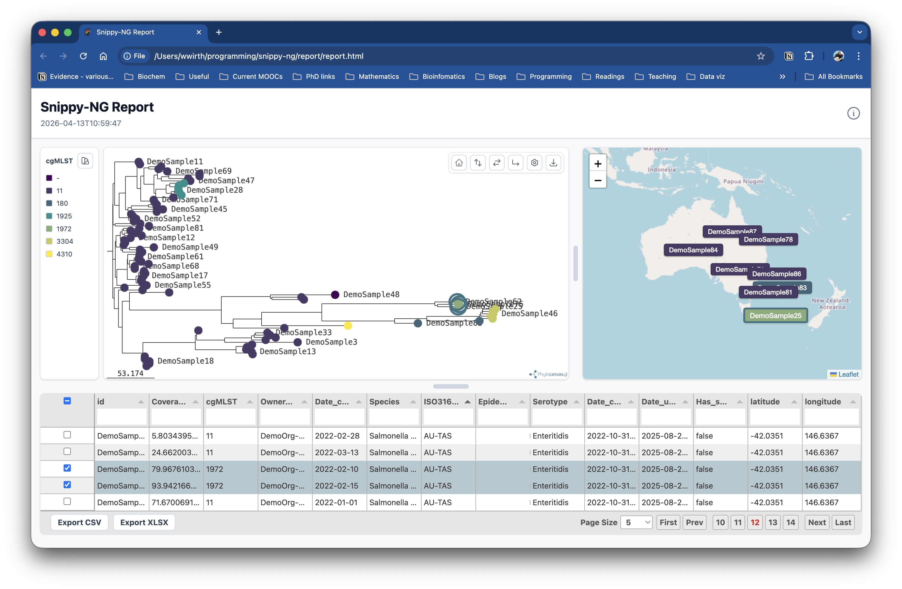

snippy-ng utils report-tree
Create a standalone HTML report from a phylogenetic tree.
The report renders an interactive tree and can include sample metadata, run logs,
and a custom title. It is useful after running snippy-ng multi and
snippy-ng tree, or any time you already have a Newick tree that you want to
inspect in a browser.

Example Report
Here is an example report generated from the Snippy-NG.
Quick Start
This writes the HTML report to:
Open the HTML file in a web browser to view the interactive report.
Inputs
The only required input is a Newick tree.
Metadata is optional, but recommended when you want to label, search, filter, or colour tree tips by sample fields.
Supported metadata formats are:
- CSV
- TSV
- JSON
Metadata rows must include one of these sample identifier columns:
idsample_idsamplename
The identifier values must match tip names in the Newick tree. Rows that do not match tree tips are skipped.
Colour Tips By Metadata
Use --color-by-column to choose a metadata column for the initial tree colour
scheme.
The selected column must exist in the metadata file.
Output Options
By default, the command writes report/report.html.
Use --outdir to choose the output directory:
Use --prefix to choose the output filename prefix:
This writes:
Report Options
Set a custom report title:
Include a log file:
Midpoint-root the tree before rendering:
Ladderize the tree before rendering:
Options can be combined:
snippy-ng utils report-tree multi/tree/tree.treefile \
--metadata multi/snippy.vcf.summary.tsv \
--color-by-column lineage \
--logs multi/snippy-ng.log \
--title "Snippy-NG outbreak report" \
--mid-point-root \
--ladderize \
--outdir multi/report \
--prefix report
Command Reference
| Option | Default | Description |
|---|---|---|
NEWICK |
required | Newick tree file to render. |
--metadata |
none | Optional metadata file in JSON, CSV, or TSV format. |
--color-by-column |
none | Metadata column used to colour tree tips. |
--logs |
none | Optional log file to include in the report. |
--title |
Snippy-NG Report |
Title shown in the HTML report. |
--mid-point-root |
off | Midpoint-root the tree before rendering. |
--ladderize |
off | Ladderize the tree before rendering. |
--outdir, -o |
report |
Output directory. |
--prefix, -p |
report |
Prefix for the generated HTML file. |